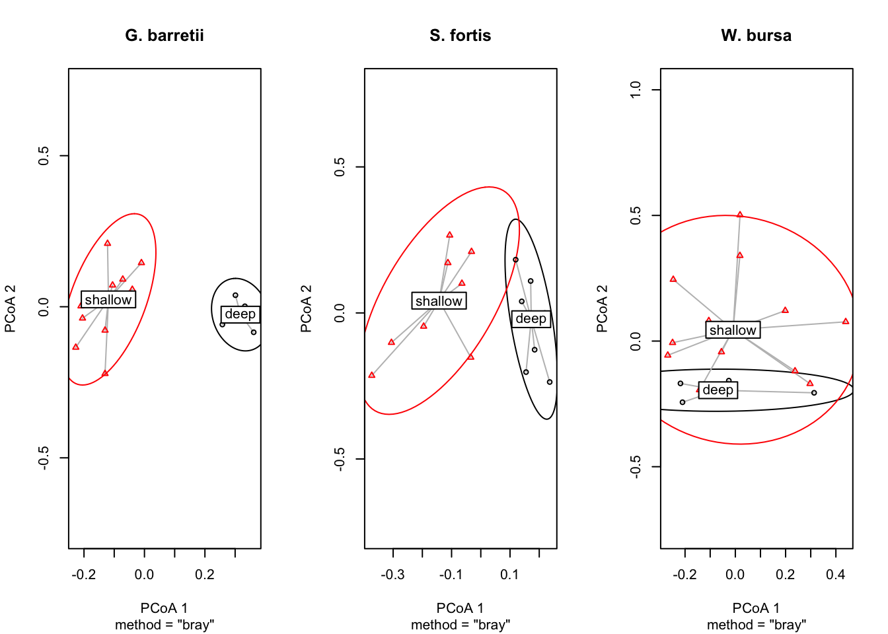

3 Microbiota
3.1 OTU table overview
Let’s start by taking a look at the OTU table and get an overall impression of our data.
library(tidyverse)
library(reshape2)
library(stringr)
library(ggplot2)
library(RColorBrewer)
library(forcats)
library(kableExtra)
options(kableExtra.html.bsTable = T)
library(gridExtra)
library(DT)
library(vegan)
library(phyloseq)
library(picante)
library(seqinr)
library(gtools)
# install.packages('webshot') webshot::install_phantomjs()microbiome <- read.csv("data/OTU_all_R.csv", header = T, sep = ";")
meta_data <- read.csv("data/Steffen_et_al_metadata_PANGAEA.csv", header = T, sep = ";")
# meta_data <- meta_data[!str_sub(meta_data$unified_ID,1,2)=='QC',] # remove QC
# samples
meta_data <- meta_data[meta_data$unified_ID %in% microbiome$Sample_ID, ]
microbiome <- microbiome[order(microbiome$Sample_ID), ]
meta_data <- meta_data[order(meta_data$unified_ID), ]
# dropping factors from full data:
meta_data[] <- lapply(meta_data, function(x) if (is.factor(x)) factor(x) else x)
microbiome[] <- lapply(microbiome, function(x) if (is.factor(x)) factor(x) else x)
# all(meta_data$unified_ID==microbiome$Sample_ID)
rownames(microbiome) <- microbiome[, 1]
microbiome[, 1] <- NULL
microbiome["total_OTUs"] <- apply(microbiome, 1, sum) #total_OTUs = Cummulative read count
micro_fig1 <- data.frame(microbiome[, "total_OTUs"])
micro_fig1["unified_ID"] <- rownames(microbiome)
micro_fig1["normalisation"] <- "none"
microbiome$total_OTUs <- NULL
microbiome <- sqrt(microbiome)
microbiome["total_OTUs"] <- apply(microbiome, 1, sum)
micro_fig2 <- data.frame(microbiome[, "total_OTUs"])
micro_fig2["unified_ID"] <- rownames(microbiome)
micro_fig2["normalisation"] <- "sqrt"
microbiome$total_OTUs <- NULL
microbiome <- wisconsin(microbiome)
microbiome["total_OTUs"] <- apply(microbiome, 1, sum)
micro_fig3 <- data.frame(microbiome[, "total_OTUs"])
micro_fig3["unified_ID"] <- rownames(microbiome)
micro_fig3["normalisation"] <- "sqrt wisconsin"
micro_fig <- rbind(micro_fig1, micro_fig2, micro_fig3)
colnames(micro_fig) <- c("total_OTUs", "unified_ID", "normalisation")
micro_fig["Species"] <- str_sub(micro_fig$unified_ID, 1, 2)
ggplot(micro_fig, aes(x = unified_ID, y = total_OTUs)) + geom_bar(stat = "identity") +
facet_grid(vars(normalisation), vars(Species), scales = "free") + xlab("Samples") +
ylab("Number of OTUs") + ggtitle("Cummulative read count after normalisation") +
theme_bw() + theme(axis.text.x = element_text(angle = 90, hjust = 1))
Figure 3.1: Read count overview of the OTU table before and after the normalisation applied in the data analysis for this study.
Do the normalisations have affect how well we can discriminate between the microbiota?
microbiome <- read.csv("data/OTU_all_R.csv", header = T, sep = ";")
meta_data <- read.csv("data/Steffen_et_al_metadata_PANGAEA.csv", header = T, sep = ";")
meta_data <- meta_data[meta_data$unified_ID %in% microbiome$Sample_ID, ]
rownames(microbiome) <- microbiome[, 1]
microbiome[, 1] <- NULL
pca_plot <- function(microbiome, meta_data, my_title) {
micro.pca <- prcomp(microbiome, scale = T)
k <- summary(micro.pca)[["importance"]]
micro_pca_df <- data.frame(micro.pca$x) #scores, i.e. principal components of the sponge sample
micro_pca_df["unified_ID"] <- as.factor(rownames(micro_pca_df))
x1 <- paste("PC1", round(k[2, 1], digits = 3) * 100, "%")
y1 <- paste("PC2", round(k[2, 2], digits = 3) * 100, "%")
micro_pca_df <- left_join(micro_pca_df[, c("PC1", "PC2", "PC3", "unified_ID")],
meta_data[, c("Species", "Depth", "Latitude", "Longitude", "MeanBottomTemp_Cdeg",
"MeanBotSalinity_PSU", "unified_ID")])
p <- ggplot(micro_pca_df, aes(x = PC1, y = PC2)) + geom_point(size = 3, mapping = aes(shape = factor(Species))) +
ggtitle(my_title) + xlab(x1) + ylab(y1) + labs(shape = "Species") + theme_bw() +
theme(legend.position = "none")
return(p)
}
untransformed <- pca_plot(microbiome, meta_data, "untransformed")
sqrt_transformed <- pca_plot(sqrt(microbiome), meta_data, "sqrt")
sqrt_wisc_transformed <- pca_plot(wisconsin(sqrt(microbiome)), meta_data, "sqrt and wisconsin")
grid.arrange(untransformed, sqrt_transformed, sqrt_wisc_transformed, nrow = 1, top = "PCA: Impact of normalisation on discrimination of the microbiota")
Figure 3.2: PCA of the data sets with and without transformation/normalisation. Circles are Gb, triangles are Sf, squares are Wb
microbiome <- read.csv("data/OTU_all_R.csv", header = T, sep = ";")
meta_data <- read.csv("data/Steffen_et_al_metadata_PANGAEA.csv", header = T, sep = ";")
meta_data <- meta_data[meta_data$unified_ID %in% microbiome$Sample_ID, ]
rownames(microbiome) <- microbiome[, 1]
microbiome[, 1] <- NULL
nmds_plot <- function(microbiome, meta_data, my_title) {
micro.mds <- metaMDS(microbiome, k = 2, trymax = 100, distance = "bray", trace = FALSE)
nmds_points <- as.data.frame(micro.mds$points)
samples <- data.frame(nmds_points$MDS1, nmds_points$MDS2)
samples["unified_ID"] <- rownames(microbiome)
meta_data <- meta_data[, c("unified_ID", "Depth", "Species")]
samples <- left_join(samples, meta_data)
stress <- paste("Stress=", round(micro.mds$stress, digits = 3))
p <- ggplot(samples, aes(x = nmds_points.MDS1, y = nmds_points.MDS2)) + geom_point(aes(shape = Species,
alpha = 0.5), size = 4) + ggtitle(my_title) + labs(shape = "Sponge species") +
theme_bw() + theme(legend.position = "none") + xlab("NMDS 1") + ylab("NMDS 2") +
annotate("text", x = 0, y = 1, label = stress)
return(p)
}
untransformed <- nmds_plot(microbiome, meta_data, "untransformed")
sqrt_transformed <- nmds_plot(sqrt(microbiome), meta_data, "sqrt")
sqrt_wisc_transformed <- nmds_plot(wisconsin(sqrt(microbiome)), meta_data, "sqrt and wisconsin")
grid.arrange(untransformed, sqrt_transformed, sqrt_wisc_transformed, nrow = 1, top = "NMDS: Impact of normalisation on discrimination of the microbiota")
Figure 3.3: NMDS of the data sets with and without transformation/normalisation. Circles are Gb, triangles are Sf, squares are Wb
It seems that we don’t lose any relevant information and the normalisations in fact increase the discriminatory power.
3.2 Alpha diversity
The microbiota are composed of 420 OTUs in G. barretti, 461 OTUs in S. fortis and 135 OTUs in W. bursa. While G. barretti and S. fortis share 316, respectively they each only share 2 and 8 OTUs with W. bursa. Only a single OTU (OTU4 or X1969004, an Archaeon) is shared among the three sponge hosts.
How does that reflect in their diversities? Below we show Shannon diversity, species richness (SR) and Faith’s phylogenetic distance (PD).
library(vegan)
library(reshape2)
library(phyloseq)
library(picante)
microbiome <- read.csv("data/OTU_all_R.csv", header = T, sep = ";")
meta_data <- read.csv("data/Steffen_et_al_metadata_PANGAEA.csv", header = T, sep = ";")
taxonomy <- read.csv("data/microbiome_taxonomy.csv", header = T, sep = ";")
tree <- read.nexus("data/infile.nex.con.X.tre")
rownames(microbiome) <- microbiome$Sample_ID
microbiome$Sample_ID <- NULL
otumat <- t(microbiome)
otumat <- wisconsin(sqrt(otumat))
colnames(otumat) <- rownames(microbiome)
rownames(taxonomy) <- paste0("X", taxonomy$OTU_ID)
taxonomy$OTU_ID <- NULL
# all(rownames(taxonomy)==rownames(otumat))
# relative abundance
otumat <- apply(otumat, 2, function(i) i/sum(i))
OTU <- otu_table(otumat, taxa_are_rows = TRUE)
# remove low abundance taxa OTU <- filter_taxa(OTU, function(x) mean(x) > 0.0025,
# TRUE)
taxmat <- as.matrix(taxonomy)
TAX <- tax_table(taxmat)
biom_data <- phyloseq(OTU, TAX)
# Merge into phyloseq object
pso <- merge_phyloseq(biom_data, tree) #merging a phyloseq and a tree file
pso <- prune_taxa(taxa_sums(pso) > 0, pso)
# Calculate Phylogenetic Distance (PD) of the dataset, ALPHA DIVERSITY
otu_table_pso <- as.data.frame(pso@otu_table)
df.pd <- pd(t(otu_table_pso), tree, include.root = F)
df.pd["unified_ID"] <- rownames(df.pd)
# df.pd: PD = Faith's Phylogenetic diversity, SR= species richness
div <- as.data.frame(diversity(t(otumat), index = "shannon"))
div["spec"] <- str_sub(rownames(div), 1, 2)
colnames(div) <- c("Shannon_diversity", "spec")
div["unified_ID"] <- rownames(div)
div_indices <- full_join(div, df.pd)
md <- meta_data[, c("unified_ID", "Depth")]
div_indices <- left_join(div_indices, md)
div_indices <- reshape2::melt(div_indices, id.vars = c("spec", "unified_ID", "Depth"))
ggplot(div_indices, aes(x = Depth, y = value)) + geom_point() + facet_grid(vars(variable),
vars(spec), scales = "free") + theme(axis.text.x = element_text(angle = -90,
vjust = 0.5, hjust = 1), legend.position = "none") + ylab("Diversity metrics") +
xlab("Sample depth") + theme_bw()
Figure 3.4: Microbiota diversity indices grouped by sponge species and ordered by sample depth.
We see that the HMA sponges G. barretti and S. fortis not only have more OTUs but also a higher diversity in their prokaryotic communities then the LMA sponge W. bursa.
3.3 Beta diversity
In a way, the Fig. 3.2 and 3.3 have already shown us the beta diversity in our samples. Looking more into the data, we found that the two dimensional representation can be misleading at times and so we provide the first three axes components for exploration below.
library(plot3D)
library(rgl)
library(plotly)
### PCA
microbiome <- read.csv("data/OTU_all_R.csv", header = T, sep = ";")
meta_data <- read.csv("data/Steffen_et_al_metadata_PANGAEA.csv", header = T, sep = ";")
meta_data <- meta_data[meta_data$unified_ID %in% microbiome$Sample_ID, ]
rownames(microbiome) <- microbiome[, 1]
microbiome[, 1] <- NULL
microbiome <- sqrt(microbiome)
micro.pca <- prcomp(microbiome, scale = T)
k <- summary(micro.pca)[["importance"]]
micro_pca_df <- data.frame(micro.pca$x) #scores, i.e. principal components of the sponge sample
micro_pca_df["unified_ID"] <- as.factor(rownames(micro_pca_df))
x1 <- paste("PC1", round(k[2, 1], digits = 3) * 100, "%")
y1 <- paste("PC2", round(k[2, 2], digits = 3) * 100, "%")
z1 <- paste("PC3", round(k[2, 3], digits = 3) * 100, "%")
micro_pca_df <- left_join(micro_pca_df[, c("PC1", "PC2", "PC3", "unified_ID")], meta_data[,
c("Species", "Depth", "Latitude", "Longitude", "MeanBottomTemp_Cdeg", "MeanBotSalinity_PSU",
"unified_ID")])
# ggplot(micro_pca_df, aes(x=PC1, y=PC2))+geom_point(size=3,
# mapping=aes(shape=factor(Species),
# col=Depth))+ggtitle(my_title)+xlab(x1)+ylab(y1)+labs(shape='Species')+theme_bw()+theme(legend.position
# = 'none')
## rgl/plot3D
with(micro_pca_df, text3D(PC1, PC2, PC3, colvar = micro_pca_df$Depth, theta = 60,
phi = 20, xlab = x1, ylab = y1, zlab = z1, main = "3D microbiome PCA", labels = micro_pca_df$unified_ID,
cex = 0.9, bty = "g", ticktype = "detailed", d = 2, clab = c("Depth [m]"), adj = 0.5,
font = 2))Figure 3.5: PCA of the met
## plotly
axx <- list(backgroundcolor = "rgb(211,211,211)", gridcolor = "rgb(255,255,255)",
title = x1, showbackground = TRUE)
axy <- list(backgroundcolor = "rgb(211,211,211)", gridcolor = "rgb(255,255,255)",
title = y1, showbackground = TRUE)
axz <- list(backgroundcolor = "rgb(211,211,211)", gridcolor = "rgb(255,255,255)",
title = z1, showbackground = TRUE)
mic_i <- plot_ly(micro_pca_df, x = ~micro_pca_df$PC1, y = ~micro_pca_df$PC2, z = ~micro_pca_df$PC3,
symbol = ~Species, symbols = c("diamond", "x", "circle"), color = ~micro_pca_df$Depth) %>%
add_markers() %>% layout(scene = list(xaxis = axx, yaxis = axy, zaxis = axz))
mic_iFigure 3.5: PCA of the met
f <- basename(tempfile("PCA_microbiome_plotly", ".", ".html"))
on.exit(unlink(f), add = TRUE)
html <- htmlwidgets::saveWidget(mic_i, f)library(plot3D)
library(rgl)
library(plotly)
### PCA
microbiome <- read.csv("data/OTU_all_R.csv", header = T, sep = ";")
meta_data <- read.csv("data/Steffen_et_al_metadata_PANGAEA.csv", header = T, sep = ";")
meta_data <- meta_data[meta_data$unified_ID %in% microbiome$Sample_ID, ]
rownames(microbiome) <- microbiome[, 1]
microbiome[, 1] <- NULL
micro.pca <- prcomp(microbiome, scale = T)
k <- summary(micro.pca)[["importance"]]
micro_pca_df <- data.frame(micro.pca$x) #scores, i.e. principal components of the sponge sample
micro_pca_df["unified_ID"] <- as.factor(rownames(micro_pca_df))
x1 <- paste("PC1", round(k[2, 1], digits = 3) * 100, "%")
y1 <- paste("PC2", round(k[2, 2], digits = 3) * 100, "%")
z1 <- paste("PC3", round(k[2, 3], digits = 3) * 100, "%")
micro_pca_df <- left_join(micro_pca_df[, c("PC1", "PC2", "PC3", "unified_ID")], meta_data[,
c("Species", "Depth", "Latitude", "Longitude", "MeanBottomTemp_Cdeg", "MeanBotSalinity_PSU",
"unified_ID")])
# ggplot(micro_pca_df, aes(x=PC1, y=PC2))+geom_point(size=3,
# mapping=aes(shape=factor(Species),
# col=Depth))+ggtitle(my_title)+xlab(x1)+ylab(y1)+labs(shape='Species')+theme_bw()+theme(legend.position
# = 'none')
# with(micro_pca_df, scatter3D(x = PC1, y = PC2, z = -PC3, colvar
# =micro_pca_df$Depth, pch = 16, cex = 1.5, xlab =x1, ylab =y1, zlab =z1, clab =
# c('Depth','m'), main = '3D microbiome PCA', ticktype = 'detailed', theta = 10,
# d = 2, colkey = list(length = 0.5, width = 0.5, cex.clab = 0.75)))
# ks1 scatter3D(x=micro_pca_df$PC1, y=micro_pca_df$PC2, micro_pca_df$PC3) #works
# crude #KEEP scatter3D(x=micro_pca_df$PC1, y=micro_pca_df$PC2, micro_pca_df$PC3,
# phi = 0, bty = 'g',pch = 20, cex = 2, ticktype = 'detailed')
# scatter3D(x=micro_pca_df$PC1, y=micro_pca_df$PC2, micro_pca_df$PC3, phi = 0,
# labels = micro_pca_df$unified_ID, bty = 'g',pch = 20, cex = 2, ticktype =
# 'detailed',colvar = micro_pca_df$Depth)
# rgl/plot3D
with(micro_pca_df, text3D(PC1, PC2, PC3, colvar = micro_pca_df$Depth, theta = 60,
phi = 20, xlab = x1, ylab = y1, zlab = z1, main = "3D microbiome PCA", labels = micro_pca_df$unified_ID,
cex = 0.9, bty = "g", ticktype = "detailed", d = 2, clab = c("Depth [m]"), adj = 0.5,
font = 2))
## plotly
axx <- list(backgroundcolor = "rgb(211,211,211)", gridcolor = "rgb(255,255,255)",
title = x1, showbackground = TRUE)
axy <- list(backgroundcolor = "rgb(211,211,211)", gridcolor = "rgb(255,255,255)",
title = y1, showbackground = TRUE)
axz <- list(backgroundcolor = "rgb(211,211,211)", gridcolor = "rgb(255,255,255)",
title = z1, showbackground = TRUE)
mic_i <- plot_ly(micro_pca_df, x = ~micro_pca_df$PC1, y = ~micro_pca_df$PC2, z = ~micro_pca_df$PC3,
symbol = ~Species, symbols = c("diamond", "x", "circle"), color = ~micro_pca_df$Depth) %>%
add_markers() %>% layout(scene = list(xaxis = axx, yaxis = axy, zaxis = axz))
mic_if <- basename(tempfile("PCA_microbiome_plotly", ".", ".html"))
on.exit(unlink(f), add = TRUE)
html <- htmlwidgets::saveWidget(mic_i, f)In some of the downstream analyses, we distinguish between common/abundant OTUs and rare OTUs. We use a cutoff of 0.25% average relative abundance per OTU for the classification. That implies drastically modifying the original numbers of OTUs per sponge as outlined below.
micro <- read.csv("data/OTU_all_R.csv", header = T, sep = ";")
emp <- read.csv("data/SpongeEMP.csv", header = T, sep = ";")
emp["XOTU_id"] <- str_replace(emp$OTU_ID, "OTU", "X196900")
# The full data set had the entries listed by sponge host, so there are 62
# duplicates in the OTU list length(emp$XOTU_id) # 207
# length(unique(emp$XOTU_id)) # 145
emp["num"] <- as.numeric(str_replace(emp$OTU_ID, "OTU", ""))
emp <- emp[order(emp$num), ]
emp["dup"] <- duplicated(emp$num)
# dim(emp[emp$dup=='TRUE',]) #62
emp <- emp[emp$dup == "FALSE", ]
emp[, c("sponge", "num", "dup")] <- list(NULL)
OTU_prep_sqrt <- function(micro) {
rownames(micro) <- micro$Sample_ID
micro$Sample_ID <- NULL
# micro <- sqrt(micro)
micro_gb <- micro[(str_sub(rownames(micro), 1, 2) == "Gb"), ]
micro_sf <- micro[(str_sub(rownames(micro), 1, 2) == "Sf"), ]
micro_wb <- micro[(str_sub(rownames(micro), 1, 2) == "Wb"), ]
micro_gb <- micro_gb[, colSums(micro_gb != 0) > 0] #removes columns that only contain 0
micro_sf <- micro_sf[, colSums(micro_sf != 0) > 0]
micro_wb <- micro_wb[, colSums(micro_wb != 0) > 0]
micros <- list(gb = micro_gb, sf = micro_sf, wb = micro_wb)
return(micros)
}
micro_ds <- OTU_prep_sqrt(micro)
overall_rabdc <- function(micro) {
mic <- micro
n <- 0
k <- dim(mic)[1]
mic["rowsum"] <- apply(mic, 1, sum)
while (n < k) {
n <- n + 1
mic[n, ] <- mic[n, ]/(mic$rowsum[n])
}
mic$rowsum <- NULL
mic <- data.frame(t(mic))
mic["avg_rel_abdc"] <- apply(mic, 1, mean)
mic["occurrence"] <- ifelse(mic$avg > 0.0025, "common", "rare")
return(mic)
}
gb_occurrence <- overall_rabdc(micro_ds$gb)
sf_occurrence <- overall_rabdc(micro_ds$sf)
wb_occurrence <- overall_rabdc(micro_ds$wb)
gb_occurrence <- gb_occurrence[, c("avg_rel_abdc", "occurrence")]
gb_occurrence["XOTU_id"] <- rownames(gb_occurrence)
gb_occ_emp <- left_join(gb_occurrence, emp)
sf_occurrence <- sf_occurrence[, c("avg_rel_abdc", "occurrence")]
sf_occurrence["XOTU_id"] <- rownames(sf_occurrence)
sf_occ_emp <- left_join(sf_occurrence, emp)
wb_occurrence <- wb_occurrence[, c("avg_rel_abdc", "occurrence")]
wb_occurrence["XOTU_id"] <- rownames(wb_occurrence)
wb_occ_emp <- left_join(wb_occurrence, emp)
gb_aggr <- aggregate(gb_occ_emp$avg_rel_abdc, by = list(gb_occ_emp$occurrence), FUN = "length")
sf_aggr <- aggregate(sf_occ_emp$avg_rel_abdc, by = list(sf_occ_emp$occurrence), FUN = "length")
wb_aggr <- aggregate(wb_occ_emp$avg_rel_abdc, by = list(wb_occ_emp$occurrence), FUN = "length")
aggr <- cbind(gb_aggr, sf_aggr$x, wb_aggr$x)
colnames(aggr) <- c("OTU classification", "count Gb", "count Sf", "count Wb")
options(kableExtra.html.bsTable = T)
kable(aggr, col.names = c("OTU classification", "count (Gb)", "count (Sf)", "count (Wb)"),
booktabs = T, caption = "Number of OTUs being excluded and retained in the three sponges' microbiota when filtering for average relative abundance > 0.25%.",
row.names = FALSE) %>% kable_styling(bootstrap_options = c("hover", "bordered",
"condensed", "responsive"), full_width = F, latex_options = c("scale_down"))| OTU classification | count (Gb) | count (Sf) | count (Wb) |
|---|---|---|---|
| common | 96 | 89 | 20 |
| rare | 324 | 372 | 115 |
That means, for G. barretti we exclude 77.1 % of OTUs, for S. fortis 80.7 % and for W. bursa 85.2%.
gb_common <- gb_occ_emp[gb_occ_emp$occurrence == "common", ]
sf_common <- sf_occ_emp[sf_occ_emp$occurrence == "common", ]
wb_common <- wb_occ_emp[wb_occ_emp$occurrence == "common", ]
gb_aggr <- aggregate(gb_common$avg_rel_abdc, by = list(gb_common$spongeEMP_enriched),
FUN = "length")
sf_aggr <- aggregate(sf_common$avg_rel_abdc, by = list(sf_common$spongeEMP_enriched),
FUN = "length")
wb_aggr <- aggregate(wb_common$avg_rel_abdc, by = list(wb_common$spongeEMP_enriched),
FUN = "length")
aggr <- cbind(gb_aggr, sf_aggr$x)
aggr <- left_join(aggr, wb_aggr, by = "Group.1")
colnames(aggr) <- c("EMP OTU count", "Gb", "Sf", "Wb")
options(kableExtra.html.bsTable = T)
kable(aggr, col.names = c("OTU classification", "count (Gb)", "count (Sf)", "count (Wb)"),
booktabs = T, caption = "Number of common/abundant OTUs found in the SpongeEMP data base",
row.names = FALSE) %>% kable_styling(bootstrap_options = c("hover", "bordered",
"condensed", "responsive"), full_width = F, latex_options = c("scale_down"))| OTU classification | count (Gb) | count (Sf) | count (Wb) |
|---|---|---|---|
| no | 23 | 25 | 9 |
| yes | 72 | 64 | 11 |
3.4 Environmental modelling
In order to investigate whether and which of the environmental parameter might “explain”/correlate with variation the the microbiota, we apply constrained and unconstrained ecological data analysis methods.
3.4.1 Constrained modelling approach Automatic stepwise model building
We use canonical correspondence analysis as method for ordination. According to the manual for the R package vegan, “a good dissimilarity index for multidimensional scaling should have a high rank-order similarity with gradient separation†(Oksanen et al. 2019). Thus interpreting the results of Tab 3.3, we find that square root transformation and Wisconsin standardisation increase the rank correlation between the microbial community dissimilarity matrix and the environmental gradient separation in all three sponge microbiota for a number of ecological dissimilarity indices.
library(vegan)
microbiome <- read.csv("data/OTU_all_R.csv", header = T, sep = ";")
meta_data <- read.csv("data/Steffen_et_al_metadata_PANGAEA.csv", header = T, sep = ";")
meta_data <- meta_data[meta_data$unified_ID %in% microbiome$Sample_ID, ]
# Gb12 has no salinity and temperature: impute from Gb11 & Gb13: Salinity:34.92;
# Temp:3.59
row <- which(meta_data$unified_ID == "Gb12")
temp <- which(colnames(meta_data) == "MeanBottomTemp_Cdeg")
sal <- which(colnames(meta_data) == "MeanBotSalinity_PSU")
meta_data[row, temp] <- 3.59
meta_data[row, sal] <- 34.92
rm(row, temp, sal)
OTU_prep_sqrt <- function(micro) {
rownames(micro) <- micro$Sample_ID
micro$Sample_ID <- NULL
micro <- sqrt(micro)
micro_gb <- micro[(str_sub(rownames(micro), 1, 2) == "Gb"), ]
micro_sf <- micro[(str_sub(rownames(micro), 1, 2) == "Sf"), ]
micro_wb <- micro[(str_sub(rownames(micro), 1, 2) == "Wb"), ]
micro_gb <- micro_gb[, colSums(micro_gb != 0) > 0]
micro_sf <- micro_sf[, colSums(micro_sf != 0) > 0]
micro_wb <- micro_wb[, colSums(micro_wb != 0) > 0]
micros <- list(gb = micro_gb, sf = micro_sf, wb = micro_wb)
return(micros)
}
microbiomes <- OTU_prep_sqrt(microbiome)
md_prep <- function(microbiomes, meta_data) {
meta_data <- meta_data[, c("unified_ID", "Depth", "Latitude", "Longitude", "MeanBottomTemp_Cdeg",
"MeanBotSalinity_PSU", "YEAR")]
gb <- microbiomes$gb
sf <- microbiomes$sf
wb <- microbiomes$wb
gb_md <- meta_data[meta_data$unified_ID %in% rownames(gb), ]
rownames(gb_md) <- gb_md$unified_ID
gb_md <- gb_md[order(gb_md$unified_ID), ]
all(rownames(microbiomes$gb) == rownames(gb_md))
gb_md <- gb_md[, c("Depth", "Latitude", "Longitude", "MeanBottomTemp_Cdeg", "MeanBotSalinity_PSU",
"YEAR")]
sf_md <- meta_data[meta_data$unified_ID %in% rownames(sf), ]
rownames(sf_md) <- sf_md$unified_ID
sf_md <- sf_md[order(sf_md$unified_ID), ]
sf_md$unified_ID <- NULL
wb_md <- meta_data[meta_data$unified_ID %in% rownames(wb), ]
rownames(wb_md) <- wb_md$unified_ID
wb_md <- wb_md[order(wb_md$unified_ID), ]
wb_md$unified_ID <- NULL
mds <- list(gb_md = gb_md, sf_md = sf_md, wb_md = wb_md)
return(mds)
}
mds <- md_prep(microbiomes, meta_data)
# Standardization If there is a large difference between smallest non-zero
# abundance and largest abundance, we want to reduce this difference. Usually
# square root transformation is sufficient to balance the data. Wisconsin double
# standardization often improves the gradient detection ability of dissimilarity
# indices.
# Which dissimilarity index is best?
gb_ri1 <- rankindex(scale(mds$gb_md), (microbiomes$gb)^2, c("euc", "man", "bray",
"jac", "kul")) #unstandardized
gb_ri2 <- rankindex(scale(mds$gb_md), microbiomes$gb, c("euc", "man", "bray", "jac",
"kul")) #sqrt
gb_ri3 <- rankindex(scale(mds$gb_md), wisconsin(microbiomes$gb), c("euc", "man",
"bray", "jac", "kul")) #sqrt and wisconsin
sf_ri1 <- rankindex(scale(mds$sf_md), (microbiomes$sf)^2, c("euc", "man", "bray",
"jac", "kul"))
sf_ri2 <- rankindex(scale(mds$sf_md), microbiomes$sf, c("euc", "man", "bray", "jac",
"kul"))
sf_ri3 <- rankindex(scale(mds$sf_md), wisconsin(microbiomes$sf), c("euc", "man",
"bray", "jac", "kul"))
wb_ri1 <- rankindex(scale(mds$wb_md), (microbiomes$wb)^2, c("euc", "man", "bray",
"jac", "kul"))
wb_ri2 <- rankindex(scale(mds$wb_md), microbiomes$wb, c("euc", "man", "bray", "jac",
"kul"))
wb_ri3 <- rankindex(scale(mds$wb_md), wisconsin(microbiomes$wb), c("euc", "man",
"bray", "jac", "kul"))
rankindices <- rbind(gb_ri1, gb_ri2, gb_ri3, sf_ri1, sf_ri2, sf_ri3, wb_ri1, wb_ri2,
wb_ri3)
rankindices <- as.data.frame(rankindices)
rankindices["Sponge species"] <- c(rep("G. barretti", 3), rep("S. fortis", 3), rep("W. bursa",
3))
rankindices["Normalisation"] <- c(rep(c("none", "sqrt", "sqrt & wisconsin"), 3))
options(kableExtra.html.bsTable = T)
kable(rankindices, col.names = c("Euclidean", "Manhattan", "Bray–Curtis", "Jaccard",
"Kulczynski", "Sponge species", "Normalisation"), booktabs = T, caption = "Rank correlation between dissimilarity indices and gradient separation. The higher the number the stronger the correlation, i.e. the better the fit.",
row.names = FALSE) %>% kable_styling(bootstrap_options = c("striped", "hover",
"bordered", "condensed", "responsive"), full_width = F, latex_options = c("striped",
"scale_down"))| Euclidean | Manhattan | Bray–Curtis | Jaccard | Kulczynski | Sponge species | Normalisation |
|---|---|---|---|---|---|---|
| -0.0512024 | -0.0445135 | 0.3979615 | 0.3979615 | 0.4509158 | G. barretti | none |
| 0.0930562 | 0.1658067 | 0.3967033 | 0.3967033 | 0.4010193 | G. barretti | sqrt |
| 0.4072305 | 0.4026915 | 0.4026915 | 0.4026915 | 0.4026915 | G. barretti | sqrt & wisconsin |
| 0.0816401 | 0.1826975 | 0.3111549 | 0.3111549 | 0.4108128 | S. fortis | none |
| 0.3285092 | 0.3476778 | 0.4620775 | 0.4620775 | 0.4877255 | S. fortis | sqrt |
| 0.5056811 | 0.5471905 | 0.5471905 | 0.5471905 | 0.5471905 | S. fortis | sqrt & wisconsin |
| 0.0280922 | 0.0994375 | 0.0008681 | 0.0008681 | 0.0048476 | W. bursa | none |
| 0.0376971 | 0.4854434 | 0.2801306 | 0.2801306 | 0.2656573 | W. bursa | sqrt |
| -0.0833252 | 0.3617890 | 0.3617890 | 0.3617890 | 0.3617890 | W. bursa | sqrt & wisconsin |
We adapt the microbial data sets accordingly applying square root transformation and Wisconsin standardisation of the microbiota in all subsequent ecological analyses. Then, we build a model (null model) without any environmental parameters, and one (full model) with the maximum number of environmental parameters (terms) possible so that none of them have a VIF > 10. Finally, we use the stepwise model building function ordistep to determine, which of the environmental parameters is a significant constraint for the microbiomes. The function compares the null model and adds and removes terms from the full model to find (combinations of) significant constraints. The significance of the parameters is then tested in an ANOVA.
G. barretti: first the VIFs of all terms included in the full model, second the result of the stepwise model building, third the ANOVA of the suggested model.
# mod0 has no terms, intercept only mod1 includes all terms possible with a VIF <
# 10. Available: 'Depth', 'Latitude', 'Longitude', 'MeanBottomTemp_Cdeg',
# 'MeanBotSalinity_PSU', 'YEAR'
## Gb
mod0 <- cca(wisconsin(microbiomes$gb) ~ 1, mds$gb_md)
mod1 <- cca(wisconsin(microbiomes$gb) ~ Depth + Latitude + MeanBottomTemp_Cdeg +
YEAR, mds$gb_md)
vif.cca(mod1)## Depth Latitude MeanBottomTemp_Cdeg YEAR
## 1.230382 1.775034 1.929029 1.651565## Df AIC F Pr(>F)
## + Depth 1 6.7097 3.4066 0.005 **
## ---
## Signif. codes: 0 '***' 0.001 '**' 0.01 '*' 0.05 '.' 0.1 ' ' 1## Permutation test for cca under reduced model
## Permutation: free
## Number of permutations: 999
##
## Model: cca(formula = wisconsin(microbiomes$gb) ~ Depth, data = mds$gb_md)
## Df ChiSquare F Pr(>F)
## Model 1 0.34451 3.4066 0.001 ***
## Residual 12 1.21355
## ---
## Signif. codes: 0 '***' 0.001 '**' 0.01 '*' 0.05 '.' 0.1 ' ' 1S. fortis: first the VIFs of all terms included in the full model, second the result of the stepwise model building, third the ANOVA of the suggested model.
## Sf
mod0 <- cca(wisconsin(microbiomes$sf) ~ 1, mds$sf_md)
mod1 <- cca(wisconsin(microbiomes$sf) ~ Depth + Latitude + YEAR + MeanBotSalinity_PSU +
Longitude, mds$sf_md)
vif.cca(mod1)## Depth Latitude YEAR MeanBotSalinity_PSU
## 4.218950 5.079261 1.082453 3.648340
## Longitude
## 5.071690## Df AIC F Pr(>F)
## + Depth 1 13.547 2.1462 0.005 **
## ---
## Signif. codes: 0 '***' 0.001 '**' 0.01 '*' 0.05 '.' 0.1 ' ' 1## Permutation test for cca under reduced model
## Permutation: free
## Number of permutations: 999
##
## Model: cca(formula = wisconsin(microbiomes$sf) ~ Depth, data = mds$sf_md)
## Df ChiSquare F Pr(>F)
## Model 1 0.31199 2.1462 0.001 ***
## Residual 13 1.88978
## ---
## Signif. codes: 0 '***' 0.001 '**' 0.01 '*' 0.05 '.' 0.1 ' ' 1W. bursa: first the VIFs of all terms included in the full model, second the result of the stepwise model building, third the ANOVA of the suggested model.
## Wb
mod0 <- cca(wisconsin(microbiomes$wb) ~ 1, mds$wb_md)
mod1 <- cca(wisconsin(microbiomes$wb) ~ Depth + Latitude + MeanBottomTemp_Cdeg +
YEAR, mds$wb_md)
vif.cca(mod1)## Depth Latitude MeanBottomTemp_Cdeg YEAR
## 2.216302 1.217879 2.402357 1.153565## Df AIC F Pr(>F)
## + Depth 1 25.701 1.6576 0.005 **
## ---
## Signif. codes: 0 '***' 0.001 '**' 0.01 '*' 0.05 '.' 0.1 ' ' 1## Permutation test for cca under reduced model
## Permutation: free
## Number of permutations: 999
##
## Model: cca(formula = wisconsin(microbiomes$wb) ~ Depth, data = mds$wb_md)
## Df ChiSquare F Pr(>F)
## Model 1 0.4596 1.6576 0.001 ***
## Residual 14 3.8819
## ---
## Signif. codes: 0 '***' 0.001 '**' 0.01 '*' 0.05 '.' 0.1 ' ' 1For all G. barretti and S. fortis depth is a significant constraint of the microbial community. For W. bursa we find temperature to be a significant constraint.
3.4.2 Unconstrained modelling approach
In an alternative approach, we fit environmental vectors onto an ordination of the microbiota. This method allows to include all environmental parameters (regardless of collinearity). Length of the arrow indicates strength of the predictor (environmental parameter).
microbiome <- read.csv("data/OTU_all_R.csv", header = T, sep = ";")
meta_data <- read.csv("data/Steffen_et_al_metadata_PANGAEA.csv", header = T, sep = ";")
meta_data <- meta_data[meta_data$unified_ID %in% microbiome$Sample_ID, ]
row <- which(meta_data$unified_ID == "Gb12")
temp <- which(colnames(meta_data) == "MeanBottomTemp_Cdeg")
sal <- which(colnames(meta_data) == "MeanBotSalinity_PSU")
meta_data[row, temp] <- 3.59
meta_data[row, sal] <- 34.92
rm(row, temp, sal)
microbiomes <- OTU_prep_sqrt(microbiome)
mds <- md_prep(microbiomes, meta_data)
colnames(mds$gb_md) <- c("Depth", "Lat", "Lon", "Temp", "Sal", "Year")
colnames(mds$sf_md) <- c("Depth", "Lat", "Lon", "Temp", "Sal", "Year")
colnames(mds$wb_md) <- c("Depth", "Lat", "Lon", "Temp", "Sal", "Year")
dist_micro <- vegdist(wisconsin(microbiomes$gb)) #distance matrix
ordi_micro <- metaMDS(dist_micro, trace = F) # ordination
ef <- envfit(ordi_micro, mds$gb_md, permutations = 999) # fitting arrows; STRATA?
plot(ordi_micro, display = "sites") #plot
plot(ef, p.max = 0.05) #arrows
Figure 3.6: Fitting significant (p<0.05) environmental vectors onto ordination of G. barretti microbiome.
dist_micro <- vegdist(wisconsin(microbiomes$sf)) # distance matrix
ordi_micro <- metaMDS(dist_micro, trace = F) # ordination
ef <- envfit(ordi_micro, mds$sf_md, permutations = 999) # fitting arrows
plot(ordi_micro, display = "sites") # plot
plot(ef, p.max = 0.05) # arrows
Figure 3.7: Fitting significant (p<0.05) environmental vectors onto ordination of S. fortis microbiome.
dist_micro <- vegdist(wisconsin(microbiomes$wb)) # distance matrix
ordi_micro <- metaMDS(dist_micro, trace = F) # ordination
ef <- envfit(ordi_micro, mds$wb_md, permutations = 999) # fitting arrows
plot(ordi_micro, display = "sites") # plot
plot(ef, p.max = 0.05) # arrows
Figure 3.8: Fitting significant (p<0.05) environmental vectors onto ordination of W. bursa microbiome.
3.4.3 Hierarchical clustering
## Clustering
par(mfrow = c(1, 3))
dist_micro <- vegdist(wisconsin(microbiomes$gb)) #distance matrix
clua <- hclust(dist_micro, "average") #average= UPGMA
plot(clua, sub = "Gb", xlab = "UPGMA")
rect.hclust(clua, 2)
grp1 <- cutree(clua, 2)
dist_micro <- vegdist(wisconsin(microbiomes$sf)) #distance matrix
clua <- hclust(dist_micro, "average") #average= UPGMA
plot(clua, sub = "Sf", xlab = "UPGMA")
grp2 <- cutree(clua, 2)
dist_micro <- vegdist(wisconsin(microbiomes$wb)) #distance matrix
clua <- hclust(dist_micro, "average") #average= UPGMA
plot(clua, sub = "Wb", xlab = "UPGMA")
Figure 3.9: Hclust
grp3 <- cutree(clua, 2)
par(mfrow = c(1, 1))
# ord <- cca(wisconsin(microbiomes$gb)) plot(ord, display = 'sites')
# ordihull(ord, grp1, lty = 2, col = 'red')
# ord <- cca(wisconsin(microbiomes$sf)) plot(ord, display = 'sites')
# ordihull(ord, grp2, lty = 2, col = 'red')
# ord <- cca(wisconsin(microbiomes$wb)) plot(ord, display = 'sites')
# ordihull(ord, grp3, lty = 2, col = 'red')To summarise, in this section on environmental modelling, we’ve shown that the prokaryotic communities in G. barretti and S. fortis seem to be influenced by depth both in contrained and unconstrained methods. For W. bursa we get mixed results. Hence at this point, the picture of a depth effect on LMA sponge prokaryotic communities remains ambiguous.
Our intention with the hierarchical clustering was to see if we could group the variation in the community composition in order to see if we can take hints from that about which aspect of the (a)biotic environment most likely causes/links to the changes. For G. barretti, we see the two main clusters representing the “shallow†(Gb1-Gb10: 407-801 m) versus the “deep†(Gb11-Gb14: 1213-1427 m) specimens. These two groups match the two water masses detected in this part of the North Atlantic. The clustering also yiels a distinct clade/group of deep specimens in S. fortis (Sf9-Sf15: 1036-1476 m). Again, this highlights the distinctiveness of the prokatyotic commmunity of the deep specimens, potentially linked to the differences in the surrounding water masses. In W. bursa the specimens originating from depths greater than 1000 m (Wb13-Wb16) cluster with shallow samples and thus, we cannot deduce any stratifying effect of depth or water masses on its microbiome.
This section has given us a general impression that depth affects (mainly HMA) sponge prokarytoic community compositions. But can we be more specific and identify which OTUs are behind those patterns?
3.5 Relative abundances
3.5.1 Bar plots
Enough of the anonymous modelling and data fitting, let’s take a look at the taxonomy of the OTUs to see who is there.
micro <- read.csv("data/OTU_all_R.csv", header = T, sep = ";")
meta_data <- read.csv("data/PANGAEA_Final.csv", header = T, sep = ";")
taxonomy <- read.csv("data/microbiome_taxonomy.csv", header = T, sep = ";")
OTU_prep_sqrt <- function(micro) {
rownames(micro) <- micro$Sample_ID
micro$Sample_ID <- NULL
micro <- sqrt(micro)
micro_gb <- micro[(str_sub(rownames(micro), 1, 2) == "Gb"), ]
micro_sf <- micro[(str_sub(rownames(micro), 1, 2) == "Sf"), ]
micro_wb <- micro[(str_sub(rownames(micro), 1, 2) == "Wb"), ]
micro_gb <- micro_gb[, colSums(micro_gb != 0) > 0]
micro_sf <- micro_sf[, colSums(micro_sf != 0) > 0]
micro_wb <- micro_wb[, colSums(micro_wb != 0) > 0]
micros <- list(gb = micro_gb, sf = micro_sf, wb = micro_wb)
return(micros)
}
micro_ds <- OTU_prep_sqrt(micro)
overall_rabdc <- function(micros) {
mic <- micros
n <- 0
k <- dim(mic)[1]
mic["rowsum"] <- apply(mic, 1, sum)
while (n < k) {
n <- n + 1
mic[n, ] <- mic[n, ]/(mic$rowsum[n])
}
mic$rowsum <- NULL
mic <- data.frame(t(mic))
mic["avg_rel_abdc"] <- apply(mic, 1, mean)
mic["occurrence"] <- ifelse(mic$avg > 0.0025, "common", "rare")
return(mic)
}
occurrence <- lapply(micro_ds, overall_rabdc)
# PHYLUM
adonis_prep <- function(taxonomy, occurrence) {
occurrence$gb["XOTU"] <- rownames(occurrence$gb)
occurrence$sf["XOTU"] <- rownames(occurrence$sf)
occurrence$wb["XOTU"] <- rownames(occurrence$wb)
tax <- taxonomy[, c("OTU_ID", "Phylum", "Class")]
n <- 0
k <- dim(tax)[1]
tax["XOTU"] <- NA
while (n < k) {
n <- n + 1
tax$XOTU[n] <- paste0("X", tax$OTU_ID[n])
}
tax_gb <- inner_join(tax, occurrence$gb)
tax_sf <- inner_join(tax, occurrence$sf)
tax_wb <- inner_join(tax, occurrence$wb)
taxes <- list(gb = tax_gb, sf = tax_sf, wb = tax_wb)
return(taxes)
}
taxes <- adonis_prep(taxonomy, occurrence)
cleaning <- function(taxes) {
gb <- taxes$gb
sf <- taxes$sf
wb <- taxes$wb
# Renaming & removing whitespaces
gb$Phylum <- as.character(str_trim(as.character(gb$Phylum)))
sf$Phylum <- as.character(str_trim(as.character(sf$Phylum)))
wb$Phylum <- as.character(str_trim(as.character(wb$Phylum)))
gb$Class <- as.character(str_trim(as.character(gb$Class)))
sf$Class <- as.character(str_trim(as.character(sf$Class)))
wb$Class <- as.character(str_trim(as.character(wb$Class)))
## GB
gb$Class[(gb$Phylum == "PAUC34f")] <- "PAUC34f_unclassified"
gb$Class[(gb$Phylum == "")] <- "unclassified"
gb$Phylum[(gb$Phylum == "")] <- "unclassified"
gb$Class[(gb$Phylum == "Tectomicrobia")] <- "Tectomicrobia_unclassified"
gb$Class[(gb$Phylum == "SBR1093")] <- "SBR1093_unclassified"
gb$Class[(gb$Phylum == "Poribacteria")] <- "Poribacteria_unclassified"
gb$Class[gb$Phylum == "Chloroflexi" & gb$Class == ""] <- "Chloroflexi_unclassified"
## SF
sf$Class[(sf$Phylum == "")] <- "unclassified"
sf$Phylum[(sf$Phylum == "")] <- "unclassified"
sf$Class[(sf$Phylum == "PAUC34f")] <- "PAUC34f_unclassified"
sf$Class[(sf$Phylum == "Proteobacteria" & sf$Class == "")] <- "Proteobacteria_unclassified"
sf$Class[(sf$Phylum == "Tectomicrobia")] <- "Tectomicrobia_unclassified"
sf$Class[(sf$Phylum == "SBR1093")] <- "SBR1093_unclassified"
sf$Class[(sf$Phylum == "Poribacteria")] <- "Poribacteria_unclassified"
## WB
wb$Class[(wb$Phylum == "")] <- "unclassified"
wb$Phylum[(wb$Phylum == "")] <- "unclassified"
# merge back
taxes <- list(gb = gb, sf = sf, wb = wb)
return(taxes)
}
taxes <- cleaning(taxes)
taxes <- lapply(taxes, function(x) {
rownames(x) <- x$XOTU
x
})
taxes <- lapply(taxes, function(x) {
x[c("avg_rel_abdc", "occurrence", "OTU_ID", "XOTU")] <- NULL
x
})
taxes <- lapply(taxes, function(x) {
x["Class"] <- NULL
x
})
# aggregate sum of relative abundance per phylum in each sponge sample
gb <- aggregate(taxes$gb[, 2:dim(taxes$gb)[2]], list(taxes$gb[, "Phylum"]), sum) #works
sf <- aggregate(taxes$sf[, 2:dim(taxes$sf)[2]], list(taxes$sf[, "Phylum"]), sum) #works
wb <- aggregate(taxes$wb[, 2:dim(taxes$wb)[2]], list(taxes$wb[, "Phylum"]), sum) #works
taxes_phy <- full_join(gb, sf)
taxes_phy <- full_join(taxes_phy, wb)
taxes_phy[is.na(taxes_phy)] <- 0
# check there are no weird names aggregate(.~ Group.1, data=taxes_phy, sum)
rownames(taxes_phy) <- taxes_phy$Group.1
taxes_phy$Group.1 <- NULL
df_phylum <- data.frame(t(taxes_phy)) #taxes_phy_t <- df_phylum
df_phylum["Sample_ID"] <- rownames(df_phylum)
df_phylum <- melt(df_phylum, id.vars = c("Sample_ID"))
colnames(df_phylum) <- c("Sample_ID", "Phylum", "variable")
# ggplot(df_phylum, aes(x=Sample_ID, y=variable,
# fill=Phylum))+geom_bar(stat='identity')+ theme_classic()+theme(axis.text.x =
# element_text(angle = 90, hjust = 1), legend.position = 'bottom')+xlab('Samples
# ordered by depth')+ylab('Relative abundance')+
# scale_x_discrete(limits=c('Gb1','Gb2','Gb3', 'Gb4', 'Gb5', 'Gb6', 'Gb7', 'Gb8',
# 'Gb9', 'Gb10', 'Gb11', 'Gb12', 'Gb13', 'Gb14', 'Sf1', 'Sf2', 'Sf3', 'Sf4',
# 'Sf5', 'Sf6', 'Sf7', 'Sf8', 'Sf9', 'Sf10', 'Sf11', 'Sf12', 'Sf13', 'Sf14',
# 'Sf15', 'Wb1', 'Wb2', 'Wb3', 'Wb4', 'Wb5', 'Wb6', 'Wb7', 'Wb8', 'Wb9', 'Wb10',
# 'Wb11', 'Wb12', 'Wb13', 'Wb14', 'Wb15', 'Wb16'))+ scale_fill_manual('', breaks
# = c('Acidobacteria', 'Actinobacteria', 'Bacteroidetes', 'Chlamydiae',
# 'Chloroflexi', 'Cyanobacteria', 'Deferribacteres', 'Deinococcus.Thermus',
# 'Firmicutes', 'Gemmatimonadetes', 'Nitrospinae', 'Nitrospirae', 'PAUC34f',
# 'Planctomycetes', 'Poribacteria', 'Proteobacteria', 'SBR1093', 'Spirochaetae',
# 'Tectomicrobia', 'Thaumarchaeota', 'unclassified', 'Verrucomicrobia'), values =
# c('#b8c4f6','#ffaaaf','#3d1349','#ffffff','#01559d','#ffffff','#ffffff','#ffffff','#ffffff','#019c51','#b10060','#49ca00','#dd8e00','#f282ff','#ffffff','#ff633f','#ec0040','#010b92','#cf00aa','#aba900','#ffffff','#fce300'),
# labels = c('Acidobacteria', 'Actinobacteria', 'Bacteroidetes', 'Chlamydiae',
# 'Chloroflexi', 'Cyanobacteria', 'Deferribacteres', 'Deinococcus.Thermus',
# 'Firmicutes', 'Gemmatimonadetes', 'Nitrospinae', 'Nitrospirae', 'PAUC34f',
# 'Planctomycetes', 'Poribacteria', 'Proteobacteria', 'SBR1093', 'Spirochaetae',
# 'Tectomicrobia', 'Thaumarchaeota', 'unclassified', 'Verrucomicrobia'))
# df_phylum['spec'] <- str_sub(df_phylum$Sample_ID,1,2) md <-
# meta_data[,c('unified_ID', 'Depth')] colnames(md) <- c('Sample_ID', 'Depth')
# df_phylum <- left_join(df_phylum, md)
# ggplot(df_phylum, aes(x=as.factor(Depth), y=variable, fill=Phylum))+
# geom_bar(stat='identity')+facet_wrap(.~spec, scales='free')+
# theme_classic()+theme(axis.text.x = element_text(angle = 90, hjust =
# 1),legend.position = 'bottom')+xlab('Samples ordered by depth')+ylab('Relative
# abundance')+ scale_fill_manual('', breaks = c('Acidobacteria',
# 'Actinobacteria', 'Bacteroidetes', 'Chlamydiae', 'Chloroflexi',
# 'Cyanobacteria', 'Deferribacteres', 'Deinococcus.Thermus', 'Firmicutes',
# 'Gemmatimonadetes', 'Nitrospinae', 'Nitrospirae', 'PAUC34f', 'Planctomycetes',
# 'Poribacteria', 'Proteobacteria', 'SBR1093', 'Spirochaetae', 'Tectomicrobia',
# 'Thaumarchaeota', 'unclassified', 'Verrucomicrobia'), values =
# c('#b8c4f6','#ffaaaf','#3d1349','#ffffff','#01559d','#ffffff','#ffffff','#ffffff','#ffffff','#019c51','#b10060','#49ca00','#dd8e00','#f282ff','#ffffff','#ff633f','#ec0040','#010b92','#cf00aa','#aba900','#ffffff','#fce300'),
# labels = c('Acidobacteria', 'Actinobacteria', 'Bacteroidetes', 'Chlamydiae',
# 'Chloroflexi', 'Cyanobacteria', 'Deferribacteres', 'Deinococcus.Thermus',
# 'Firmicutes', 'Gemmatimonadetes', 'Nitrospinae', 'Nitrospirae', 'PAUC34f',
# 'Planctomycetes', 'Poribacteria', 'Proteobacteria', 'SBR1093', 'Spirochaetae',
# 'Tectomicrobia', 'Thaumarchaeota', 'unclassified', 'Verrucomicrobia') )
last_plot() + scale_fill_manual("", breaks = c("Acidobacteria", "Actinobacteria",
"Bacteroidetes", "Chlamydiae", "Chloroflexi", "Cyanobacteria", "Deferribacteres",
"Deinococcus.Thermus", "Firmicutes", "Gemmatimonadetes", "Nitrospinae", "Nitrospirae",
"PAUC34f", "Planctomycetes", "Poribacteria", "Proteobacteria", "SBR1093", "Spirochaetae",
"Tectomicrobia", "Thaumarchaeota", "unclassified", "Verrucomicrobia"), values = c("#b8c4f6",
"#ffaaaf", "#3d1349", "#B6B2A9", "#01559d", "#CACAC8", "#E1DED7", "#CEC7C1",
"#9A9B9D", "#019c51", "#b10060", "#49ca00", "#dd8e00", "#f282ff", "#AFA79D",
"#ff633f", "#ec0040", "#010b92", "#cf00aa", "#aba900", "#ffffff", "#fce300"),
labels = c("Acidobacteria", "Actinobacteria", "Bacteroidetes", "Chlamydiae",
"Chloroflexi", "Cyanobacteria", "Deferribacteres", "Deinococcus.Thermus",
"Firmicutes", "Gemmatimonadetes", "Nitrospinae", "Nitrospirae", "PAUC34f",
"Planctomycetes", "Poribacteria", "Proteobacteria", "SBR1093", "Spirochaetae",
"Tectomicrobia", "Thaumarchaeota", "unclassified", "Verrucomicrobia"))## NULLWe see in this bar plot that the relative abundance of phyla remains fairly stable across the different depths. Generally, the prokaryotic community of sponges is described as somewhat species specific and stable across virtually any measured gradient. At this taxonomic resolution, these findings hold true. The composition of the prokaryotic communities in the HMA sponges G. barretti and S. fortis is similar across all samples, while the composition in the LMA sponge W. bursa differs in composition but also displaying only minor variations in phyla proportions. The phyla left white/blank are present at very low abundance and we thought the figure might be visually easier without too many colours.
The phyla Chloroflexi, Actinobacteria, Acidobacteria, PAUC34f, and Gemmatimonadetes were described as HMA indicator phyla (Moitinho-Silva et al. 2017) and are present in the HMA sponges G. barretti and S. fortis (although Actinobacteria are also present in W. bursa).The phyla Proteobacteria, Bacteroidetes, Planctomycetes, and Firmicutes were disgnated LMA indicator phyla and are found in W. bursa (although Proteobacteria are also present in the HMA sponges).
3.5.2 Tabular overview
If you prefer numbers, this is what it breaks down to. You can sort the tables.
microbiome <- read.csv("data/OTU_all_R.csv", header = T, sep = ";")
OTU_prep_sqrt <- function(micro) {
rownames(micro) <- micro$Sample_ID
micro$Sample_ID <- NULL
micro <- sqrt(micro)
micro_gb <- micro[(str_sub(rownames(micro), 1, 2) == "Gb"), ]
micro_sf <- micro[(str_sub(rownames(micro), 1, 2) == "Sf"), ]
micro_wb <- micro[(str_sub(rownames(micro), 1, 2) == "Wb"), ]
micro_gb <- micro_gb[, colSums(micro_gb != 0) > 0]
micro_sf <- micro_sf[, colSums(micro_sf != 0) > 0]
micro_wb <- micro_wb[, colSums(micro_wb != 0) > 0]
micros <- list(gb = micro_gb, sf = micro_sf, wb = micro_wb)
return(micros)
}
micro_ds <- OTU_prep_sqrt(microbiome)
# calculate relative abundance of OTU across sponge samples
overall_rabdc <- function(micros) {
mic <- micros
n <- 0
k <- dim(mic)[1]
mic["rowsum"] <- apply(mic, 1, sum)
while (n < k) {
n <- n + 1
mic[n, ] <- mic[n, ]/(mic$rowsum[n])
}
mic$rowsum <- NULL
mic <- data.frame(t(mic))
mic["avg_rel_abdc"] <- apply(mic, 1, mean)
mic["occurrence"] <- ifelse(mic$avg > 0.0025, "common", "rare")
return(mic)
}
# gb_occurrence <- overall_rabdc(micro_ds$gb) sf_occurrence <-
# overall_rabdc(micro_ds$sf) wb_occurrence <- overall_rabdc(micro_ds$wb)
# occurrence <- list(gb=gb_occurrence, sf=sf_occurrence, wb=wb_occurrence)
occurrence <- lapply(micro_ds, overall_rabdc)
aggregations <- function(taxonomy, occurrence) {
occurrence$gb["XOTU"] <- rownames(occurrence$gb)
occurrence$sf["XOTU"] <- rownames(occurrence$sf)
occurrence$wb["XOTU"] <- rownames(occurrence$wb)
tax <- taxonomy[, c("OTU_ID", "Phylum", "Class")]
n <- 0
k <- dim(tax)[1]
tax["XOTU"] <- NA
while (n < k) {
n <- n + 1
tax$XOTU[n] <- paste0("X", tax$OTU_ID[n])
}
tax_gb <- inner_join(tax, occurrence$gb[, c("XOTU", "avg_rel_abdc")])
tax_sf <- inner_join(tax, occurrence$sf[, c("XOTU", "avg_rel_abdc")])
tax_wb <- inner_join(tax, occurrence$wb[, c("XOTU", "avg_rel_abdc")])
taxes <- list(gb = tax_gb, sf = tax_sf, wb = tax_wb)
gb1 <- aggregate(tax_gb$Phylum, by = list(tax_gb$Phylum), FUN = "length")
gb2 <- aggregate(tax_gb$avg_rel_abdc, by = list(tax_gb$Phylum), FUN = "sum")
gb_p <- full_join(gb1, gb2, by = ("Group.1" = "Group.1"))
colnames(gb_p) <- c("Phylum", "OTU_number", "avg_rel_abdc")
gb1 <- aggregate(tax_gb$Class, by = list(tax_gb$Class), FUN = "length")
gb2 <- aggregate(tax_gb$avg_rel_abdc, by = list(tax_gb$Class), FUN = "sum")
gb_c <- full_join(gb1, gb2, by = ("Group.1" = "Group.1"))
colnames(gb_c) <- c("Class", "OTU_number", "avg_rel_abdc")
test1 <- lapply(taxes, function(x) aggregate(avg_rel_abdc ~ Phylum, data = x,
FUN = "length"))
lapply(taxes, function(x) aggregate(avg_rel_abdc ~ Phylum, data = x, FUN = "sum"))
return(taxes)
}
taxes <- aggregations(taxonomy, occurrence)
cleaning <- function(taxes) {
gb <- taxes$gb
sf <- taxes$sf
wb <- taxes$wb
# Renaming & removing whitespaces
gb$Phylum <- as.character(str_trim(as.character(gb$Phylum)))
sf$Phylum <- as.character(str_trim(as.character(sf$Phylum)))
wb$Phylum <- as.character(str_trim(as.character(wb$Phylum)))
gb$Class <- as.character(str_trim(as.character(gb$Class)))
sf$Class <- as.character(str_trim(as.character(sf$Class)))
wb$Class <- as.character(str_trim(as.character(wb$Class)))
## GB
gb$Class[(gb$Phylum == "PAUC34f")] <- "PAUC34f_unclassified"
gb$Class[(gb$Phylum == "")] <- "unclassified"
gb$Phylum[(gb$Phylum == "")] <- "unclassified"
gb$Class[(gb$Phylum == "Tectomicrobia")] <- "Tectomicrobia_unclassified"
gb$Class[(gb$Phylum == "SBR1093")] <- "SBR1093_unclassified"
gb$Class[(gb$Phylum == "Poribacteria")] <- "Poribacteria_unclassified"
gb$Class[gb$Phylum == "Chloroflexi" & gb$Class == ""] <- "Chloroflexi_unclassified"
## SF
sf$Class[(sf$Phylum == "")] <- "unclassified"
sf$Phylum[(sf$Phylum == "")] <- "unclassified"
sf$Class[(sf$Phylum == "PAUC34f")] <- "PAUC34f_unclassified"
sf$Class[(sf$Phylum == "Proteobacteria" & sf$Class == "")] <- "Proteobacteria_unclassified"
sf$Class[(sf$Phylum == "Tectomicrobia")] <- "Tectomicrobia_unclassified"
sf$Class[(sf$Phylum == "SBR1093")] <- "SBR1093_unclassified"
sf$Class[(sf$Phylum == "Poribacteria")] <- "Poribacteria_unclassified"
## WB
wb$Class[(wb$Phylum == "")] <- "unclassified"
wb$Phylum[(wb$Phylum == "")] <- "unclassified"
# merge back
taxes <- list(gb = gb, sf = sf, wb = wb)
return(taxes)
}
taxes <- cleaning(taxes)
phy_OTU <- lapply(taxes, function(x) aggregate(avg_rel_abdc ~ Phylum, data = x, FUN = "length")) #OTU count
phy_rabdc <- lapply(taxes, function(x) aggregate(avg_rel_abdc ~ Phylum, data = x,
FUN = "sum")) #sums relative abundance
class_OTU <- lapply(taxes, function(x) aggregate(avg_rel_abdc ~ Class, data = x,
FUN = "length"))
class_rabdc <- lapply(taxes, function(x) aggregate(avg_rel_abdc ~ Class, data = x,
FUN = "sum"))3.5.2.1 G. barretti: Phyla and classes present
3.5.2.2 S. fortis: Phyla and classes present
3.5.2.3 W. bursa: Phyla and classes present
wb_P <- cbind(phy_OTU$wb, phy_rabdc$wb[, ("avg_rel_abdc")])
colnames(wb_P) <- c("Phylum", "OTU count", "cummulative average abundance")
# wb_P$`cummulative average abundance` <- round(c(wb_P$`cummulative average
# abundance`, digits = 6))
DT::datatable(wb_P, rownames = FALSE)3.5.3 Statistical comparison at phylum and class level
3.6 Depth response: OTU perspective
Summarising the OTU diversity by phylum or class only shows what was previously known. The composition of the sponges’ prokaryotic community is stable. However, summarising doesn’t do the data justice. We therefore correlate the average relative abundance of every OTU with depth. The Otus yielding a significant correlation with depth are shown by their respecive relative abundance across the depths.
# ====================== INC-DEC CORRELATION ================== Categorises the
# OTUs by their response to depth.
micro <- read.csv("data/OTU_all_R.csv", header = T, sep = ";")
meta_data <- read.csv("data/Steffen_et_al_metadata_PANGAEA.csv", header = T, sep = ";")
meta_data_prep <- function(meta_data) {
meta_data <- meta_data[, c("unified_ID", "Depth", "Latitude", "Longitude", "MeanBottomTemp_Cdeg",
"MeanBotSalinity_PSU", "YEAR")]
colnames(meta_data) <- c("unified_ID", "Depth", "Latitude", "Longitude", "Temperature",
"Salinity", "Year")
meta_data <- meta_data[!(str_sub(meta_data$unified_ID, 1, 2) == "QC"), ]
meta_data[] <- lapply(meta_data, function(x) if (is.factor(x))
factor(x) else x)
# Gb12, Gb20 and Gb21 are missing temperature and salinity. Imputing data from
# closeby samples:
meta_data$Salinity[meta_data$unified_ID == "Gb12"] <- 34.92
meta_data$Salinity[meta_data$unified_ID == "Gb20"] <- 34.92
meta_data$Salinity[meta_data$unified_ID == "Gb21"] <- 34.56
meta_data$Temperature[meta_data$unified_ID == "Gb12"] <- 3.71
meta_data$Temperature[meta_data$unified_ID == "Gb20"] <- 3.65
meta_data$Temperature[meta_data$unified_ID == "Gb21"] <- 2.32
meta_data["spec"] <- str_sub(meta_data$unified_ID, 1, 2)
meta_data <- meta_data[order(meta_data$unified_ID), ]
return(meta_data)
}
meta_data <- meta_data_prep(meta_data)
micro_ds <- OTU_prep_sqrt(micro)
rel_abdc <- function(micro) {
mic <- micro
mic <- data.frame(t(mic))
mic["max"] <- apply(mic, 1, max)
n <- 0
k <- dim(mic)[1]
while (n < k) {
n <- n + 1
mic[n, ] <- mic[n, ]/(mic$max[n])
}
mic$max <- NULL
return(mic)
}
rabdc_gb <- rel_abdc(micro_ds$gb)
rabdc_sf <- rel_abdc(micro_ds$sf)
rabdc_wb <- rel_abdc(micro_ds$wb)
inc_dec <- function(rabdc_df, meta_data) {
md <- meta_data[meta_data$unified_ID %in% colnames(rabdc_df), ]
inc_dec <- data.frame(rownames(rabdc_df))
colnames(inc_dec) <- "XOTU"
inc_dec["inc_dec_estimate"] <- NA
inc_dec["inc_dec_p_val"] <- NA
n <- 0
k <- dim(inc_dec)[1]
while (n < k) {
n <- n + 1
inc_dec$inc_dec_estimate[n] <- cor.test(as.numeric(rabdc_df[n, ]), md$Depth)$estimate
inc_dec$inc_dec_p_val[n] <- cor.test(as.numeric(rabdc_df[n, ]), md$Depth)$p.value
}
inc_dec["classification"] <- NA
inc_dec$classification[inc_dec$inc_dec_estimate < 0] <- "dec.trend"
inc_dec$classification[inc_dec$inc_dec_estimate > 0] <- "inc.trend"
inc_dec$classification[inc_dec$inc_dec_estimate < 0 & inc_dec$inc_dec_p <= 0.05] <- "decreasing"
inc_dec$classification[inc_dec$inc_dec_estimate > 0 & inc_dec$inc_dec_p <= 0.05] <- "increasing"
return(inc_dec)
}
gb_response <- inc_dec(rabdc_gb, meta_data)
sf_response <- inc_dec(rabdc_sf, meta_data)
wb_response <- inc_dec(rabdc_wb, meta_data)
### dfs to saving, join _reponse to rabdc_ and calculate vag </>1000 m
# For heatmaps gb
rabdc_gb["XOTU"] <- rownames(rabdc_gb)
gb_heatmap <- full_join(rabdc_gb, gb_response)
gb_heatmap <- melt(gb_heatmap, id.vars = c("XOTU", "inc_dec_estimate", "inc_dec_p_val",
"classification"))
md <- meta_data[, c("unified_ID", "Depth")]
colnames(md) <- c("variable", "Depth")
gb_heatmap <- left_join(gb_heatmap, md)
gb_heatmap["name"] <- str_sub(gb_heatmap$XOTU, -3)
gb_heatmap_i <- gb_heatmap[gb_heatmap$classification == "increasing", ]
gb_heatmap_d <- gb_heatmap[gb_heatmap$classification == "decreasing", ]
# gb_i <- ggplot(gb_heatmap_i, aes(x=as.factor(gb_heatmap_i$Depth),
# y=gb_heatmap_i$name, fill=gb_heatmap_i$value))+geom_tile()+ theme(axis.text.x =
# element_text(angle = 90, hjust = 1))+xlab('Depth')+ylab('OTUs')+ggtitle('GB
# OTUs increasing')+scale_fill_viridis_c(option =
# 'plasma')+coord_equal()+theme(plot.background=element_blank(),
# panel.border=element_blank(),
# legend.title=element_blank(),legend.position='bottom')
# gb_d <- ggplot(gb_heatmap_d, aes(x=as.factor(gb_heatmap_d$Depth),
# y=gb_heatmap_d$name, fill=gb_heatmap_d$value))+geom_tile()+ theme(axis.text.x =
# element_text(angle = 90, hjust = 1))+xlab('Depth')+ylab('OTUs')+ggtitle('GB
# OTUs decreasing')+scale_fill_viridis_c(option =
# 'plasma')+coord_equal()+theme(plot.background=element_blank(),
# panel.border=element_blank(),
# legend.title=element_blank(),legend.position='bottom')
# sf
rabdc_sf["XOTU"] <- rownames(rabdc_sf)
sf_heatmap <- full_join(rabdc_sf, sf_response)
sf_heatmap <- melt(sf_heatmap, id.vars = c("XOTU", "inc_dec_estimate", "inc_dec_p_val",
"classification"))
md <- meta_data[, c("unified_ID", "Depth")]
colnames(md) <- c("variable", "Depth")
sf_heatmap <- left_join(sf_heatmap, md)
sf_heatmap["name"] <- str_sub(sf_heatmap$XOTU, -3)
sf_heatmap_i <- sf_heatmap[sf_heatmap$classification == "increasing", ]
sf_heatmap_d <- sf_heatmap[sf_heatmap$classification == "decreasing", ]
# sf_i <- ggplot(sf_heatmap_i, aes(x=as.factor(sf_heatmap_i$Depth),
# y=sf_heatmap_i$name, fill=sf_heatmap_i$value))+geom_tile()+ theme(axis.text.x =
# element_text(angle = 90, hjust = 1))+xlab('Depth')+ylab('OTUs')+ggtitle('SF
# OTUs increasing')+scale_fill_viridis_c(option =
# 'plasma')+coord_equal()+theme(plot.background=element_blank(),
# panel.border=element_blank(),
# legend.title=element_blank(),legend.position='bottom')
# sf_d <- ggplot(sf_heatmap_d, aes(x=as.factor(sf_heatmap_d$Depth),
# y=sf_heatmap_d$name, fill=sf_heatmap_d$value))+geom_tile()+ theme(axis.text.x =
# element_text(angle = 90, hjust = 1))+xlab('Depth')+ylab('OTUs')+ggtitle('SF
# OTUs decreasing')+scale_fill_viridis_c(option =
# 'plasma')+coord_equal()+theme(plot.background=element_blank(),
# panel.border=element_blank(),
# legend.title=element_blank(),legend.position='bottom')
# wb
rabdc_wb["XOTU"] <- rownames(rabdc_wb)
wb_heatmap <- full_join(rabdc_wb, wb_response)
wb_heatmap <- melt(wb_heatmap, id.vars = c("XOTU", "inc_dec_estimate", "inc_dec_p_val",
"classification"))
md <- meta_data[, c("unified_ID", "Depth")]
colnames(md) <- c("variable", "Depth")
wb_heatmap <- left_join(wb_heatmap, md)
wb_heatmap["name"] <- str_sub(wb_heatmap$XOTU, -3)
wb_heatmap_i <- wb_heatmap[wb_heatmap$classification == "increasing", ]
wb_heatmap_d <- wb_heatmap[wb_heatmap$classification == "decreasing", ]
# wb_i <- ggplot(wb_heatmap_i, aes(x=as.factor(wb_heatmap_i$Depth),
# y=wb_heatmap_i$name, fill=wb_heatmap_i$value))+geom_tile()+ theme(axis.text.x =
# element_text(angle = 90, hjust = 1))+xlab('Depth')+ylab('OTUs')+ggtitle('WB
# OTUs increasing')+scale_fill_viridis_c(option =
# 'plasma')+coord_equal()+theme(plot.background=element_blank(),
# panel.border=element_blank(),
# legend.title=element_blank(),legend.position='bottom')
# wb_d <- ggplot(wb_heatmap_d, aes(x=as.factor(wb_heatmap_d$Depth),
# y=wb_heatmap_d$name, fill=wb_heatmap_d$value))+geom_tile()+ theme(axis.text.x =
# element_text(angle = 90, hjust = 1))+xlab('Depth')+ylab('OTUs')+ggtitle('WB
# OTUs decreasing')+scale_fill_viridis_c(option =
# 'plasma')+coord_equal()+theme(plot.background=element_blank(),
# panel.border=element_blank(),
# legend.title=element_blank(),legend.position='bottom')
# Facetting for the figure in the publication
gb_heatmap_i["spec"] <- c("Geodia barretti")
sf_heatmap_i["spec"] <- c("Stryphnus fortis")
wb_heatmap_i["spec"] <- c("Weberella bursa")
increase <- rbind(gb_heatmap_i, sf_heatmap_i, wb_heatmap_i)
inc <- ggplot(increase, aes(x = as.factor(Depth), y = name, fill = value)) + facet_grid(. ~
spec, space = "free", scales = "free") + geom_tile() + theme_classic() + theme(axis.text.x = element_text(angle = 90,
hjust = 1)) + xlab("Depth") + ylab("OTUs") + ggtitle("OTUs increasing") + scale_fill_viridis_c(option = "plasma") +
theme(plot.background = element_blank(), panel.border = element_blank(), legend.title = element_blank(),
legend.position = "bottom")
gb_heatmap_d["spec"] <- c("Geodia barretti")
sf_heatmap_d["spec"] <- c("Stryphnus fortis")
wb_heatmap_d["spec"] <- c("Weberella bursa")
decrease <- rbind(gb_heatmap_d, sf_heatmap_d, wb_heatmap_d)
dec <- ggplot(decrease, aes(x = as.factor(Depth), y = name, fill = value)) + facet_grid(. ~
spec, space = "free", scales = "free", drop = T) + geom_tile() + theme_classic() +
theme(axis.text.x = element_text(angle = 90, hjust = 1)) + xlab("Depth") + ylab("OTUs") +
ggtitle("OTUs decreasing") + scale_fill_viridis_c(option = "plasma") + theme(plot.background = element_blank(),
panel.border = element_blank(), legend.title = element_blank(), legend.position = "bottom")
library(gridExtra)
grid.arrange(inc, dec, nrow = 1)
Figure 3.10: OTUs significantly increasing and decreasing with depth in the three sponge species.
gb_nums <- c(length(unique(gb_heatmap$name)), length(unique(gb_heatmap_i$name)),
length(unique(gb_heatmap_d$name)))
sf_nums <- c(length(unique(sf_heatmap$name)), length(unique(sf_heatmap_i$name)),
length(unique(sf_heatmap_d$name)))
wb_nums <- c(length(unique(wb_heatmap$name)), length(unique(wb_heatmap_i$name)),
length(unique(wb_heatmap_d$name)))
overview <- rbind(gb_nums, sf_nums, wb_nums)
colnames(overview) <- c("Total", "increasing", "decreasing")
rownames(overview) <- c("G. barretti microbiota", "S. fortis microbiota", "W. bursa microbiota")
overview <- data.frame(overview)
overview["unaffected"] <- overview$Total - (overview$increasing + overview$decreasing)
kable(overview, col.names = c("Total", "N OTUs increasing", "N OTUs decreasing",
"N OTUs unaffected"), escape = F, align = "c", booktabs = T, caption = "Microbiota response to depth",
"html") %>% kable_styling(bootstrap_options = c("hover", "condensed", "responsive",
latex_options = "striped", full_width = F))| Total | N OTUs increasing | N OTUs decreasing | N OTUs unaffected | |
|---|---|---|---|---|
| G. barretti microbiota | 420 | 82 | 58 | 280 |
| S. fortis microbiota | 461 | 72 | 32 | 357 |
| W. bursa microbiota | 135 | 11 | 13 | 111 |
# overview <- overview[,c(2:4)] overview['response'] <- rownames(overview) plot
# <- melt(overview)
# stacked <- ggplot(plot, aes(x=response, y=value, fill=variable)) +
# geom_bar(position='stack', stat='identity')+ theme_minimal()+ggtitle('Stacked
# counts')+xlab('Sponge species')+ylab('OTU count')+ theme(axis.text.x =
# element_text(angle = 90, hjust = 1))
# perc <- ggplot(plot, aes(x=response, y=value, fill=variable)) +
# geom_bar(position='fill', stat='identity')+
# theme_minimal()+ggtitle('Percentages')+xlab('Sponge species')+ylab('relative
# OTU count')+ theme(axis.text.x = element_text(angle = 90, hjust = 1))
# grid.arrange(stacked, perc, nrow=2) write.csv(gb_response, 'gb_response.csv')
# write.csv(sf_response, 'sf_response.csv') write.csv(wb_response,
# 'wb_response.csv')In this Fig.3.10 as well as in Tab. 3.4, we see that at the OTU level, we observe shifts. While sometimes more gradual, there seem to OTUs exclusievely present in the “shallow†or the “deep†samples in all three sponges. In fact, in G. barretti and S. fortis, the number of OTUs increasing with depth (“deep water mass microbiome”) is greater than the number of OTUs decreasing. This leads us to believe that the deep water mass contains microbes yet to discover.
3.7 Sequence similarity
We produced fasta files, i.e. files containing the DNA sequences of the OTUs in the three sponges. The fasta header contains the following information: “OTU number”_“depth response”_“phylum”_“class”. The depth response is coded as “increasing†or “decreasing†if there is a significant correlation (p\(\leq\) 0.05) with depth and as “inc. trend†or “dec. trend†if the correlation is not significant (p\(\geq\) 0.05). The fasta sequences were aligned with MAFFT. From the aligned seqeunces, we calculated the sequence similarity comparing all versus all, and retain in a file all comparisons yielding a sequence similarity \(\geq\) 97%.
# Load one file at a time
ali <- read.alignment("data/gb_reads_for_phylogeny_MAFFT.fasta", "fasta")
ali <- read.alignment("data/sf_reads_for_phylogeny_MAFFT.fasta", "fasta")
ali <- read.alignment("data/wb_reads_for_phylogeny_MAFFT.fasta", "fasta")
# FUN calculate pairwise distance, melt, keeps only entries with >97% and <1
# similarity with significant opposing trends in both partners.
pw_dist <- function(ali) {
dist <- as.matrix(dist.alignment(ali, matrix = "similarity")) #https://www.researchgate.net/post/Homology_similarity_and_identity-can_anyone_help_with_these_terms
# dist.alignment: matrix contains the squared root of the pairwise distances. For
# example, if identity between 2 sequences is 80 the squared root of (1.0 - 0.8)
# i.e. 0.4472136.
dist <- dist^2
dist <- 1 - dist
# dist is now '%' identity, 1=100 %
dist <- melt(dist)
# Remove irrelevant entries, i.e. self-comparison and similarities below the
# threshold, this step now speeds up later steps, but not mandatory
dist <- dist[dist$value >= 0.97, ]
dist <- dist[!dist$value == 1, ]
# This removes AB - BA duplicates but still contains self comprisons, AA, BB,CC
# etc.
cols <- c("Var1", "Var2")
newdf <- dist[, cols]
for (i in 1:nrow(newdf)) {
newdf[i, ] = sort(newdf[i, cols])
}
newdf <- newdf[!duplicated(newdf), ]
# add back similarity values to the remaining comparisons/pairs
dist <- left_join(newdf, dist, by = c(Var1 = "Var1", Var2 = "Var2"))
dist["Var1_response"] <- str_sub(dist$Var1, 5, 10)
dist["Var2_response"] <- str_sub(dist$Var2, 5, 10)
# remove not significant comparisons
dist <- dist[!dist$Var1_response == "dec.tr", ] # can be toggled off
dist <- dist[!dist$Var1_response == "inc.tr", ] # can be toggled off
dist <- dist[!dist$Var2_response == "dec.tr", ] # can be toggled off
dist <- dist[!dist$Var2_response == "inc.tr", ] # can be toggled off
dist <- dist[!dist$Var2_response == dist$Var1_response, ]
# order
dist <- dist[order(dist$Var1_response, dist$Var2_response), ]
return(dist)
}
dist <- pw_dist(ali)
dist
# create csv file
write.csv(dist, "~/Documents/Metabolomics/Depth_Gradient_study/R_depth_study/Phylogeny/gb_similarity.csv") # GB
write.csv(dist, "~/Documents/Metabolomics/Depth_Gradient_study/R_depth_study/Phylogeny/sf_similarity.csv") # SF
write.csv(dist, "~/Documents/Metabolomics/Depth_Gradient_study/R_depth_study/Phylogeny/wb_similarity.csv") # WBIn G. barretti there are 34 pairs of OTUs with a sequence similarity \(\geq\) 97% and opposing responses to depth, in S. fortis there are 11 pairs while in W. bursa, there are none.
3.8 Phylogeny
The MAFFT aligend fasta sequences of G. barretti OTUs were used to infer a phylogeny under maximum likelihood model in RaxML/Bayesian statistics.
# ====================== OCCURRENCE ============== REL ABDC On original data
# sets, NOT SQRT transformed (Y tho?) micros is sqrt transformed
micro_ds <- OTU_prep_sqrt(micro)
# RUN occurrence gb_occurrence <- overall_rabdc((micro_ds$gb**2)) #INDRA's way
# exponentiate (**2) to reverse sqrt sf_occurrence <-
# overall_rabdc((micro_ds$sf**2)) wb_occurrence <-
# overall_rabdc((micro_ds$wb**2))
gb_occurrence <- overall_rabdc(micro_ds$gb)
sf_occurrence <- overall_rabdc(micro_ds$sf)
wb_occurrence <- overall_rabdc(micro_ds$wb)
# only file dump write.csv(gb_occurrence, 'gb_occurrence_avg_rel_abdc_OTU.csv')
# write.csv(sf_occurrence, 'sf_occurrence_avg_rel_abdc_OTU.csv')
# write.csv(wb_occurrence, 'wb_occurrence_avg_rel_abdc_OTU.csv')
aggregate(gb_occurrence, by = list(gb_occurrence$occurrence), FUN = "length")
aggregate(sf_occurrence, by = list(sf_occurrence$occurrence), FUN = "length")
aggregate(wb_occurrence, by = list(wb_occurrence$occurrence), FUN = "length")
# combined file dump gb_occurrence['XOTU'] <- rownames(gb_occurrence)
# sf_occurrence['XOTU'] <- rownames(sf_occurrence) wb_occurrence['XOTU'] <-
# rownames(wb_occurrence) gb_data <- full_join(gb_response,
# gb_occurrence[,c('XOTU', 'avg_rel_abdc', 'occurrence')]) sf_data <-
# full_join(sf_response, sf_occurrence[,c('XOTU', 'avg_rel_abdc', 'occurrence')])
# wb_data <- full_join(wb_response, wb_occurrence[,c('XOTU', 'avg_rel_abdc',
# 'occurrence')]) taxonomy['dummy'] <- c('X') taxonomy['XOTU'] <-
# str_c(taxonomy$dummy, taxonomy$OTU_ID) taxonomy$dummy <- NULL gb_data <-
# left_join(gb_data, taxonomy) sf_data <- left_join(sf_data, taxonomy) wb_data <-
# left_join(wb_data, taxonomy) write.csv(gb_data, 'gb_data.csv')
# write.csv(sf_data, 'sf_data.csv') write.csv(wb_data, 'wb_data.csv')
# quick_comparison
gb_occurrence <- gb_occurrence[, c("avg_rel_abdc", "occurrence")]
sf_occurrence <- sf_occurrence[, c("avg_rel_abdc", "occurrence")]
wb_occurrence <- wb_occurrence[, c("avg_rel_abdc", "occurrence")]
colnames(gb_occurrence) <- c("gb.avg_rabdc", "gb.occurr")
colnames(sf_occurrence) <- c("sf.avg_rabdc", "sf.occurr")
colnames(wb_occurrence) <- c("wb.avg_rabdc", "wb.occurr")
gb_occurrence["XOTU"] <- rownames(gb_occurrence)
sf_occurrence["XOTU"] <- rownames(sf_occurrence)
wb_occurrence["XOTU"] <- rownames(wb_occurrence)
aggregate(gb_occurrence, by = list(gb_occurrence$gb.occurr), FUN = "length")
aggregate(sf_occurrence, by = list(sf_occurrence$sf.occurr), FUN = "length")
aggregate(wb_occurrence, by = list(wb_occurrence$wb.occurr), FUN = "length")
occurrence_sqrt <- full_join(gb_occurrence, sf_occurrence)
occurrence_sqrt <- full_join(occurrence_sqrt, wb_occurrence)
head(occurrence_sqrt)
occurrence_exp.raw <- full_join(gb_occurrence, sf_occurrence)
occurrence_exp.raw <- full_join(occurrence_exp.raw, wb_occurrence)
head(occurrence_exp.raw)
# ====================== overview phylum class ========== For figures (OTU
# relative abdc heatmaps), and inc-dec correlations. Requires OTU_prep_sqrt.
micro_ds <- OTU_prep_sqrt(micro)
# RUN calculate relative abundance of OTU across sponge samples
gb_occurrence <- overall_rabdc(micro_ds$gb)
sf_occurrence <- overall_rabdc(micro_ds$sf)
wb_occurrence <- overall_rabdc(micro_ds$wb)
occurrence <- list(gb = gb_occurrence, sf = sf_occurrence, wb = wb_occurrence)
taxes <- aggregations(taxonomy, occurrence)
taxes <- cleaning(taxes)
phy_OTU <- lapply(taxes, function(x) aggregate(avg_rel_abdc ~ Phylum, data = x, FUN = "length")) #OTU count
phy_rabdc <- lapply(taxes, function(x) aggregate(avg_rel_abdc ~ Phylum, data = x,
FUN = "sum")) #sums relative abundance
class_OTU <- lapply(taxes, function(x) aggregate(avg_rel_abdc ~ Class, data = x,
FUN = "length"))
class_rabdc <- lapply(taxes, function(x) aggregate(avg_rel_abdc ~ Class, data = x,
FUN = "sum"))
# all collected in Excel file. Done. Microbiome_aggregation_phylum_class.xlsx ,
# in '/writing/'.
# Statistic comparison based on averages of relative abundance of phyla and
# classes CLASS
class <- full_join(class_rabdc$gb, class_rabdc$sf, by = c("Class"))
class <- full_join(class, class_rabdc$wb, by = c("Class"))
colnames(class) <- c("Class", "gb_avg", "sf_avg", "wb_avg")
class$gb_avg[is.na(class$gb_avg)] <- 0
class$sf_avg[is.na(class$sf_avg)] <- 0
class$wb_avg[is.na(class$wb_avg)] <- 0
head(class)
kruskal.test(class[, c(2:4)]) #p-value = 3.364e-05 # all three
kruskal.test(class[, c(2:3)]) #p-value = 0.6594 # gb & sf
# PHYLUM
phylum <- full_join(phy_rabdc$gb, phy_rabdc$sf, by = c("Phylum"))
phylum <- full_join(phylum, phy_rabdc$wb, by = c("Phylum"))
colnames(phylum) <- c("Phylum", "gb_avg", "sf_avg", "wb_avg")
phylum$gb_avg[is.na(phylum$gb_avg)] <- 0
phylum$sf_avg[is.na(phylum$sf_avg)] <- 0
phylum$wb_avg[is.na(phylum$wb_avg)] <- 0
head(phylum)
kruskal.test(phylum[, c(2:4)]) #p-value = 0.2915 # all three
kruskal.test(phylum[, c(2:3)]) #p-value = 0.5102 # gb & sf
# ======================= Testing differences at phylum and class level
# ===========
micro_ds <- OTU_prep_sqrt(micro)
occurrence <- lapply(micro_ds, overall_rabdc)
# PHYLUM
taxes <- adonis_prep(taxonomy, occurrence)
taxes <- cleaning(taxes)
taxes <- lapply(taxes, function(x) {
rownames(x) <- x$XOTU
x
})
taxes <- lapply(taxes, function(x) {
x[c("avg_rel_abdc", "occurrence", "OTU_ID", "XOTU")] <- NULL
x
})
taxes <- lapply(taxes, function(x) {
x["Class"] <- NULL
x
})
head(taxes)
gb <- aggregate(taxes$gb[, 2:dim(taxes$gb)[2]], list(taxes$gb[, "Phylum"]), sum) #works
sf <- aggregate(taxes$sf[, 2:dim(taxes$sf)[2]], list(taxes$sf[, "Phylum"]), sum) #works
wb <- aggregate(taxes$wb[, 2:dim(taxes$wb)[2]], list(taxes$wb[, "Phylum"]), sum) #works
# for this to work, dono't run: taxes <- lapply(taxes, function(x) {x['Class'] <-
# NULL; x}) gb <- aggregate(taxes$gb[,3:dim(taxes$gb)[2]],
# list(taxes$gb[,'Phylum'], taxes$gb[,'Class']), sum) #works sf <-
# aggregate(taxes$sf[,3:dim(taxes$sf)[2]], list(taxes$sf[,'Phylum'],
# taxes$sf[,'Class']), sum) #works wb <- aggregate(taxes$wb[,3:dim(taxes$wb)[2]],
# list(taxes$wb[,'Phylum'], taxes$wb[,'Class']), sum) #works
taxes_phy <- full_join(gb, sf)
taxes_phy <- full_join(taxes_phy, wb)
taxes_phy[is.na(taxes_phy)] <- 0
head(taxes_phy)
# check there are no weird names aggregate(.~ Group.1, data=taxes_phy, sum)
rownames(taxes_phy) <- taxes_phy$Group.1
taxes_phy$Group.1 <- NULL
taxes_phy_t <- data.frame(t(taxes_phy))
specs <- data.frame(rownames(taxes_phy_t))
colnames(specs) <- c("Sample_ID")
specs["species"] <- str_sub(specs$Sample_ID, 1, 2)
# Permutational anova
adonis(taxes_phy_t ~ specs$species) #all three species //significant
adonis(taxes_phy_t[c(1:29), ] ~ specs[c(1:29), 2]) #only Gb and Sf //significant
# Compare variation of relative abundance of each phylum/class among/within the
# two/three groups ANOVA (three groups)
apply(taxes_phy_t, 2, function(x) {
summary(aov(x ~ specs$species))
})
# of course they're all different, this includes Weberella.
# Mann-Whittney U aka Wilcoxon rank sum test(two groups, gb vs sf)
gbsf_phy <- taxes_phy_t[c(1:29), ]
gbsf_spec <- specs[c(1:29), ]
apply(gbsf_phy, 2, function(x) {
wilcox.test(x ~ gbsf_spec$species)
})
apply(gbsf_phy, 2, function(x) {
(wilcox.test(x ~ gbsf_spec$species))["p.value"]
}) #This is really the result we want
# CLASS
micro_ds <- OTU_prep_sqrt(micro)
occurrence <- lapply(micro_ds, overall_rabdc)
taxes <- adonis_prep(taxonomy, occurrence)
taxes <- cleaning(taxes)
taxes <- lapply(taxes, function(x) {
rownames(x) <- x$XOTU
x
})
taxes <- lapply(taxes, function(x) {
x[c("avg_rel_abdc", "occurrence", "OTU_ID", "XOTU")] <- NULL
x
})
# ================out=================== gb <- taxes$gb sf <- taxes$sf wb <-
# taxes$wb Renaming & removing whitespaces gb$Phylum <-
# as.character(str_trim(as.character(gb$Phylum))) sf$Phylum <-
# as.character(str_trim(as.character(sf$Phylum))) wb$Phylum <-
# as.character(str_trim(as.character(wb$Phylum))) gb$Class <-
# as.character(str_trim(as.character(gb$Class))) sf$Class <-
# as.character(str_trim(as.character(sf$Class))) wb$Class <-
# as.character(str_trim(as.character(wb$Class))) GB
# gb$Class[(gb$Phylum=='PAUC34f')] <- 'PAUC34f_unclassified'
# gb$Class[(gb$Phylum=='')] <- 'unclassified' gb$Phylum[(gb$Phylum=='')] <-
# 'unclassified' gb$Class[(gb$Phylum=='Tectomicrobia')] <-
# 'Tectomicrobia_unclassified' gb$Class[(gb$Phylum=='SBR1093')] <-
# 'SBR1093_unclassified' gb$Class[(gb$Phylum=='Poribacteria')] <-
# 'Poribacteria_unclassified' gb$Class[gb$Phylum=='Chloroflexi' & gb$Class=='']
# <- 'Chloroflexi_unclassified' SF sf$Class[(sf$Phylum=='')] <- 'unclassified'
# sf$Phylum[(sf$Phylum=='')] <- 'unclassified' sf$Class[(sf$Phylum=='PAUC34f')]
# <- 'PAUC34f_unclassified' sf$Class[(sf$Phylum=='Proteobacteria' &
# sf$Class=='')] <- 'Proteobacteria_unclassified'
# sf$Class[(sf$Phylum=='Tectomicrobia')] <- 'Tectomicrobia_unclassified'
# sf$Class[(sf$Phylum=='SBR1093')] <- 'SBR1093_unclassified'
# sf$Class[(sf$Phylum=='Poribacteria')] <- 'Poribacteria_unclassified' WB
# wb$Class[(wb$Phylum=='')] <- 'unclassified' wb$Phylum[(wb$Phylum=='')] <-
# 'unclassified' merge back taxes <- list(gb=gb, sf=sf, wb=wb)
# =========================================
taxes <- lapply(taxes, function(x) {
x["Phylum"] <- NULL
x
})
head(taxes)
gb <- aggregate(taxes$gb[, 2:dim(taxes$gb)[2]], list(taxes$gb[, "Class"]), sum) #works
sf <- aggregate(taxes$sf[, 2:dim(taxes$sf)[2]], list(taxes$sf[, "Class"]), sum) #works
wb <- aggregate(taxes$wb[, 2:dim(taxes$wb)[2]], list(taxes$wb[, "Class"]), sum) #works
taxes_cla <- full_join(gb, sf)
taxes_cla <- full_join(taxes_cla, wb)
taxes_cla[is.na(taxes_cla)] <- 0
head(taxes_cla)
# check there are no weird names aggregate(.~ Group.1, data=taxes_cla, sum)
rownames(taxes_cla) <- taxes_cla$Group.1
taxes_cla$Group.1 <- NULL
taxes_cla_t <- data.frame(t(taxes_cla))
specs <- data.frame(rownames(taxes_cla_t))
colnames(specs) <- c("Sample_ID")
specs["species"] <- str_sub(specs$Sample_ID, 1, 2)
# Permutational anova
adonis(taxes_cla_t ~ specs$species) #all three species //significant
adonis(taxes_cla_t[c(1:29), ] ~ specs[c(1:29), 2]) #only Gb and Sf //significant
# Compare variation of relative abundance of each clalum/class among/within the
# two/three groups ANOVA (three groups)
apply(taxes_cla_t, 2, function(x) {
summary(aov(x ~ specs$species))
})
# of course they're all different, this includes Weberella.
# Mann-Whittney U aka Wilcoxon rank sum test(two groups, gb vs sf)
gbsf_cla <- taxes_cla_t[c(1:29), ]
gbsf_spec <- specs[c(1:29), ]
apply(gbsf_cla, 2, function(x) {
wilcox.test(x ~ gbsf_spec$species)
})
apply(gbsf_cla, 2, function(x) {
(wilcox.test(x ~ gbsf_spec$species))["p.value"]
})
### =========================================== For plotting
### ================================
# YAS!
taxes_phy_m <- taxes_phy_t
taxes_phy_m["Sample_ID"] <- rownames(taxes_phy_m)
taxes_phy_m <- melt(taxes_phy_m, id.vars = c("Sample_ID"))
taxes_phy_m["Phylum"] <- taxes_phy_m$variable
# taxes_phy_m$Phylum[taxes_phy_m$Phylum=='classified'] <- 'unclassified'
taxes_phy_m
unique(taxes_phy_m$Phylum)
library(RColorBrewer)
phylum_palette <- c("#b8c4f6", "#ffaaaf", "#3d1349", "#ffffff", "#01559d", "#ffffff",
"#ffffff", "#ffffff", "#ffffff", "#019c51", "#b10060", "#49ca00", "#dd8e00",
"#f282ff", "#ffffff", "#ff633f", "#ec0040", "#010b92", "#cf00aa", "#aba900",
"#ffffff", "#fce300")
ggplot(taxes_phy_m, aes(x = Sample_ID, y = value, fill = Phylum)) + geom_bar(stat = "identity") +
theme_classic() + theme(axis.text.x = element_text(angle = 90, hjust = 1))
last_plot() + scale_x_discrete(limits = c("Gb1", "Gb2", "Gb3", "Gb4", "Gb5", "Gb6",
"Gb7", "Gb8", "Gb9", "Gb10", "Gb11", "Gb12", "Gb13", "Gb14", "Sf1", "Sf2", "Sf3",
"Sf4", "Sf5", "Sf6", "Sf7", "Sf8", "Sf9", "Sf10", "Sf11", "Sf12", "Sf13", "Sf14",
"Sf15", "Wb1", "Wb2", "Wb3", "Wb4", "Wb5", "Wb6", "Wb7", "Wb8", "Wb9", "Wb10",
"Wb11", "Wb12", "Wb13", "Wb14", "Wb15", "Wb16")) + xlab("Samples ordered by depth") +
ylab("Relative abundance") + scale_fill_manual(values = phylum_palette)
# ======END=================================
### ===== For Venn diagramms =============================
micro_ds <- OTU_prep_sqrt(micro)
gb_otus <- as.data.frame(colnames(micro_ds$gb))
colnames(gb_otus) <- c("XOTU")
sf_otus <- as.data.frame(colnames(micro_ds$sf))
colnames(sf_otus) <- c("XOTU")
wb_otus <- as.data.frame(colnames(micro_ds$wb))
colnames(wb_otus) <- c("XOTU")
dim(intersect(gb_otus, sf_otus))[1] # 361
dim(intersect(gb_otus, wb_otus))[1] # 2
dim(intersect(sf_otus, wb_otus))[1] # 8
length(intersect(intersect(gb_otus, wb_otus), intersect(sf_otus, wb_otus))) # 1
# ==========================================================
# levels(taxes_phy$Group.1)[1] <- 'unclassified'
### old stuff , could be deleted I belive===========
tax_gb <- inner_join(tax, gb_occurrence[, c("XOTU", "avg_rel_abdc")])
tax_sf <- inner_join(tax, sf_occurrence[, c("XOTU", "avg_rel_abdc")])
tax_wb <- inner_join(tax, wb_occurrence[, c("XOTU", "avg_rel_abdc")])
gb1 <- aggregate(tax_gb$Phylum, by = list(tax_gb$Phylum), FUN = "length")
gb2 <- aggregate(tax_gb$avg_rel_abdc, by = list(tax_gb$Phylum), FUN = "sum")
gb_p <- full_join(gb1, gb2, by = ("Group.1" = "Group.1"))
colnames(gb_p) <- c("Phylum", "OTU_number", "avg_rel_abdc")
gb1 <- aggregate(tax_gb$Class, by = list(tax_gb$Class), FUN = "length")
gb2 <- aggregate(tax_gb$avg_rel_abdc, by = list(tax_gb$Class), FUN = "sum")
gb_c <- full_join(gb1, gb2, by = ("Group.1" = "Group.1"))
colnames(gb_c) <- c("Class", "OTU_number", "avg_rel_abdc")
sf1 <- aggregate(tax_sf$Phylum, by = list(tax_sf$Phylum), FUN = "length")
sf2 <- aggregate(tax_sf$avg_rel_abdc, by = list(tax_sf$Phylum), FUN = "sum")
sf_p <- full_join(sf1, sf2, by = ("Group.1" = "Group.1"))
colnames(sf_p) <- c("Phylum", "OTU_number", "avg_rel_abdc")
sf1 <- aggregate(tax_sf$Class, by = list(tax_sf$Class), FUN = "length")
sf2 <- aggregate(tax_sf$avg_rel_abdc, by = list(tax_sf$Class), FUN = "sum")
sf_c <- full_join(sf1, sf2, by = ("Group.1" = "Group.1"))
colnames(sf_c) <- c("Class", "OTU_number", "avg_rel_abdc")References
Moitinho-Silva, L, G Steinert, S Nielsen, C C P Hardoim, Y-C Wu, G P McCormack, S López-Legentil, et al. 2017. “Predicting the Hma-Lma Status in Marine Sponges by Machine Learning.†Frontiers in Microbiology 8: 752. https://doi.org/10.3389/fmicb.2017.00752.
Oksanen, Jari, F. Guillaume Blanchet, Michael Friendly, Roeland Kindt, Pierre Legendre, Dan McGlinn, Peter R. Minchin, et al. 2019. Vegan: Community Ecology Package. https://CRAN.R-project.org/package=vegan.